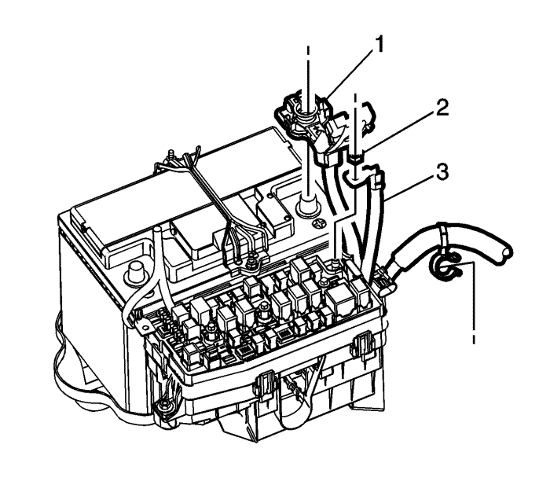

Extraiga la cubierta superior del bloque de fusibles del motor.
Extraiga los tornillos de sujeción del bloque de fusibles del motor.

Desmonte el borne positivo de la batería (3) del bloque de fusibles.
Extraiga la caja de fusibles del motor de la cubierta inferior.
Desmonte las tuercas de fijación de la tapa inferior del bloque de fusibles del motor y suelte las lengüetas del bloque de fusibles.
Desmonte la tuerca de fijación del controlador de la bujía de incandescencia (1) en el depósito de expansión y colóquela a un lado (si está disponible).
Desmonte los conectores del interior del bloque de fusibles.
Desconecte el conector del mazo de cables de la carrocería al conector del mazo de cables del motor.
Quite las tuercas de fijación del bloque de fusibles (1).
Desmonte el perno del seguro del tubo EVAP del aire acondicionado (1) en la bandeja de la batería.
Desmonte los pernos de fijación de la bandeja de la batería y suelte la bandeja de la batería del soporte de apoyo del conjunto de la pantalla térmica del bloque de fusibles.
Monte los pernos de fijación de la bandeja de la batería y apriételos a 10 N·m (89 lib. pulg.).
Monte el conjunto de la pantalla térmica del bloque de fusibles en el soporte de apoyo de la bandeja de la batería y los espárragos soldados. Apriete las tuercas (1) a 10 N·m (89 lib. pulg.).
Tienda el mazo de cables de la carrocería bajo el bloque de fusibles y conéctelo al conector del mazo de cables del motor.
Monte los conectores del bloque de fusibles.
Monte el bloque de fusibles del motor y apriete los pernos de fijación de la tapa inferior del bloque de fusibles del motor a 10 N·m (89 lib. pulg.).
Monte los pernos de fijación del bloque de fusibles del motor y apriételos a 3 N·m (27 lib. pulg.).
Instale la cubierta superior del bloque de fusibles del motor.